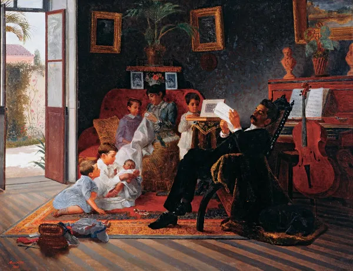
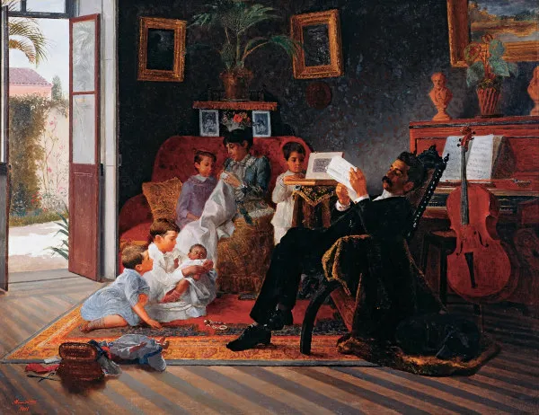
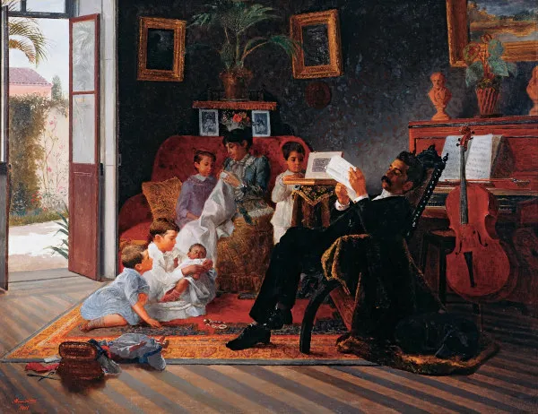
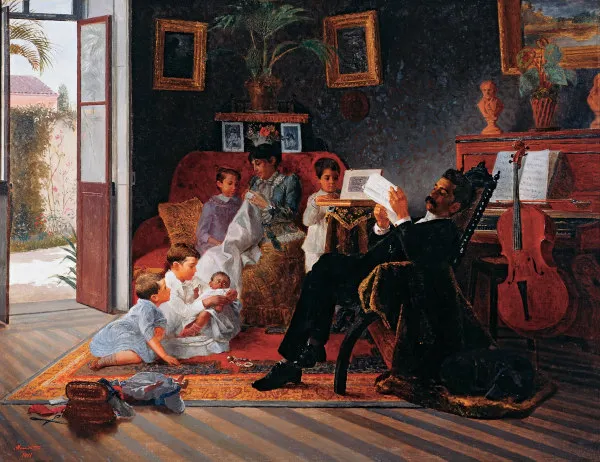

O realismo na literatura brasileira surgiu na segunda metade do século XIX, aproximadamente entre 1881 e 1890, e é caracterizado por uma abordagem mais objetiva e crítica da realidade social. Este movimento foi uma resposta ao romantismo, buscando retratar a vida de forma mais verossímil, sem idealizações, e enfocando temas sociais, psicológicos e políticos.
Mudanças Sociais e Políticas: O realismo se desenvolveu em um período de grande transformação no Brasil, com a abolição da escravidão em 1888 e a Proclamação da República em 1889. Essas mudanças criaram um novo cenário social e cultural que influenciou a literatura.
Influência do Positivismo: O pensamento positivista, que enfatizava a observação e a razão, teve grande influência sobre os escritores realistas, que buscavam uma representação fiel da sociedade e dos comportamentos humanos.
O realismo teve um impacto significativo na literatura brasileira, pois trouxe uma nova abordagem que influenciou gerações posteriores de escritores. A ênfase na análise crítica da sociedade e na psicologia dos personagens preparou o caminho para o modernismo e outros movimentos literários.
Além disso, as obras realistas continuam a ser estudadas e apreciadas, oferecendo uma visão rica e complexa da sociedade brasileira do século XIX, e suas reflexões sobre a natureza humana permanecem relevantes até hoje. O realismo também ajudou a solidificar a literatura brasileira como um campo autônomo e respeitável na cena literária mundial.